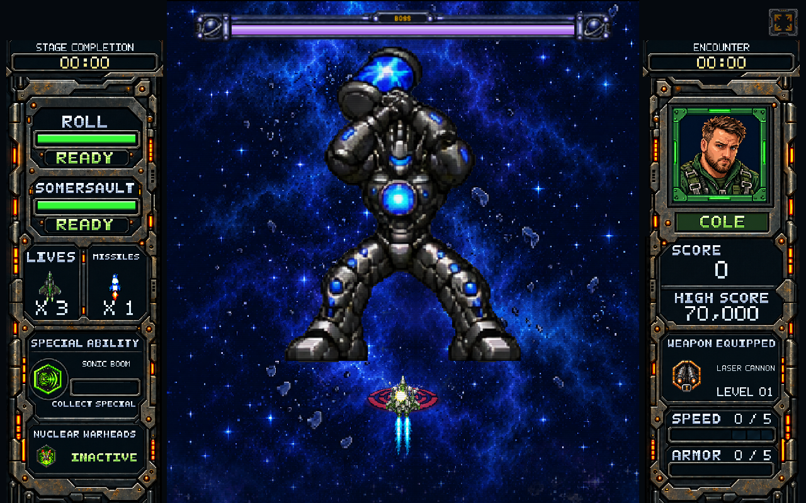
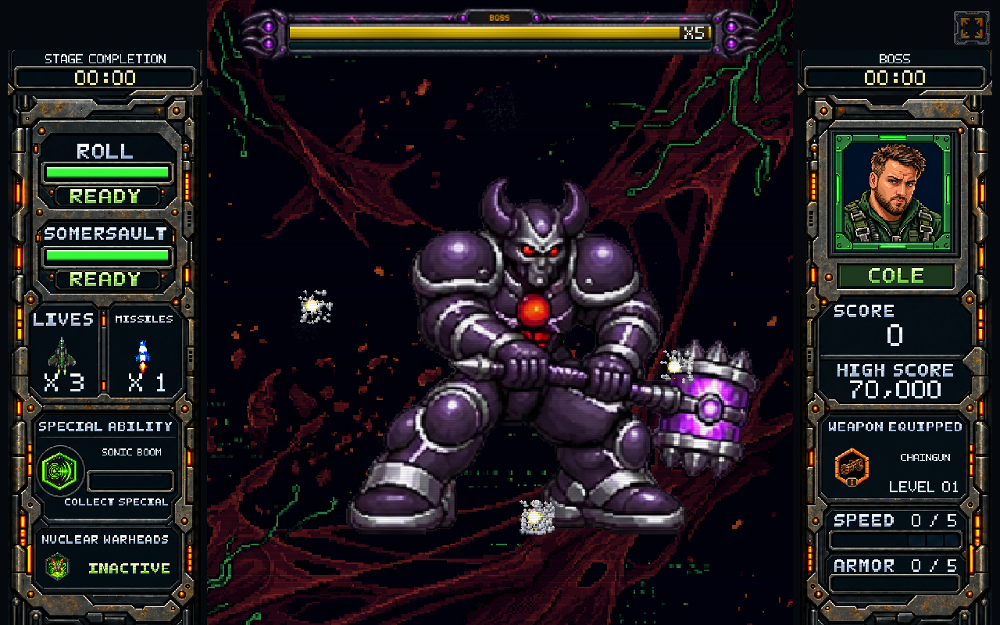
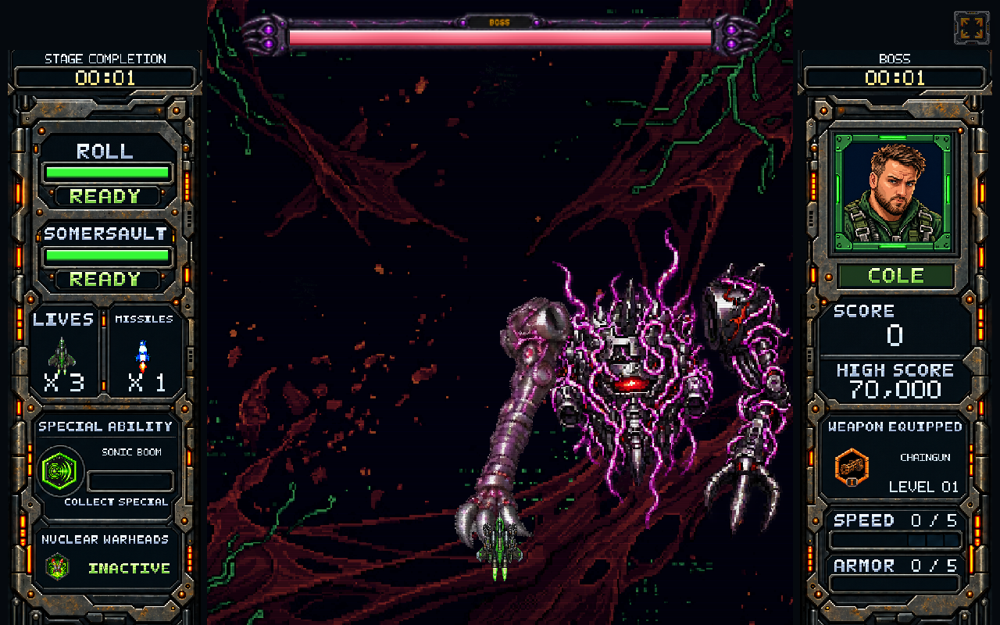
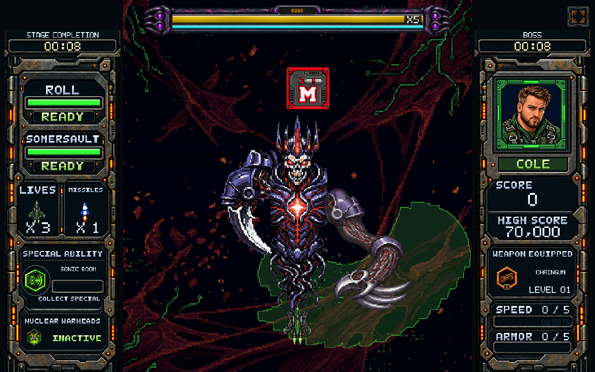

BOF · Boss Animation Review
COLEFORGE PRODUCTIONS · BULLETS OF FURY · NOVEMBER 9
Hammer & claw animation review
One committed landing. A planted repeat strike on Hard and Furious. Furious then recovers into left and right hammer swings. New ball folding and rolling, plus articulated whole-arm attacks for the drone and final Dracodia.
176 exported poses · 11 fixed-cell banks · 60 targeted checks passed
Live engine previews
Focused attack checkpoints recorded in the actual game, with an invulnerable observer and native sound effects. Each chapter explicitly starts its named attack; these are animation reviews, not continuous full-fight playthroughs. Difficulty labels select attack patterns, not a health-balance comparison.
Native screenshots
Overhead load

Planted twist

Drone reach

Final-form claw

Validation
All 60 focused checks pass, including planted depth/storm follow-ups, pause, native projectile damage, hit feedback, whole-arm pixel masks and matching Retina anchors. Every normal, Chrome, red and hit variant keeps identical alpha, even 576 × 576 cells and complete weapon clearance.
The full legacy test suite still stops at its existing missing difficultyHealthBaseline15 helper in combat_polish_0927b.js:151; it did not reach its final summary.
Detailed verification report